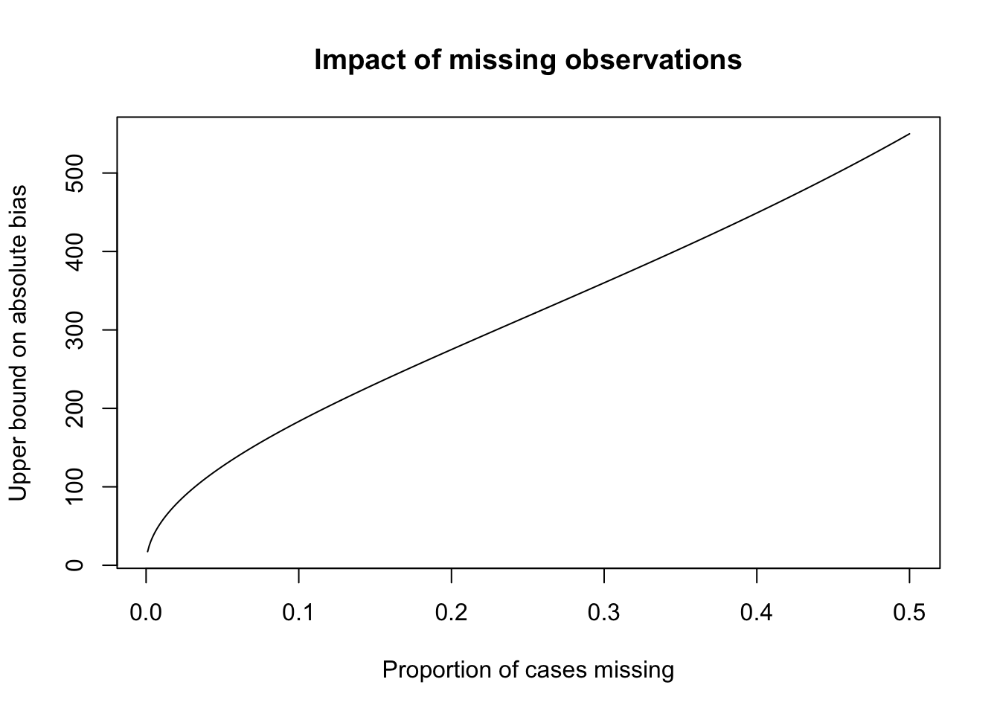
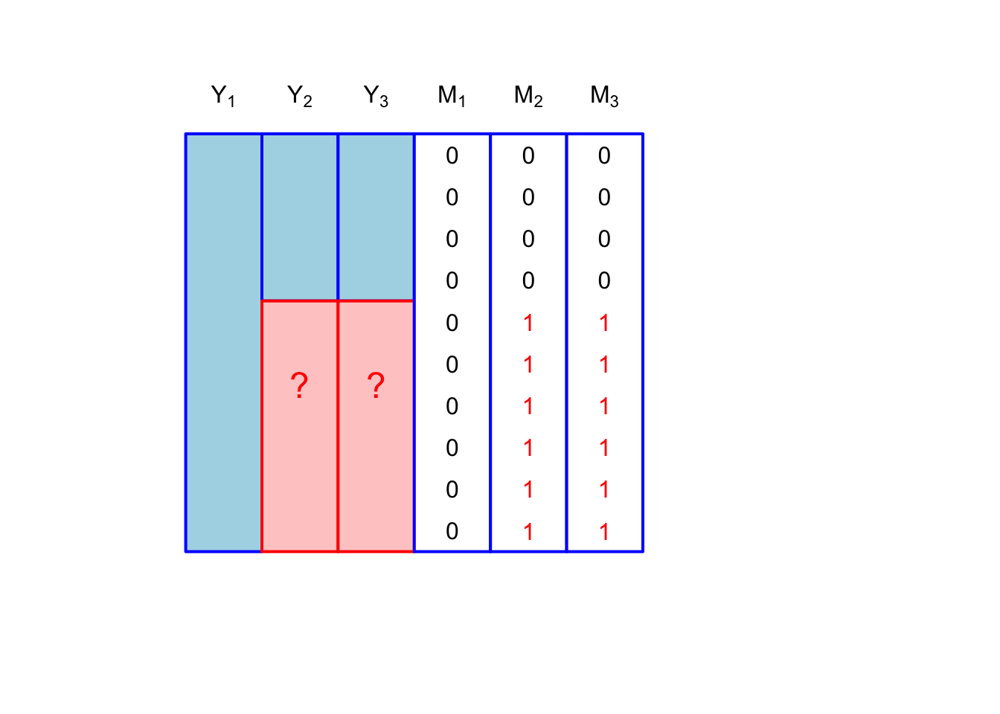
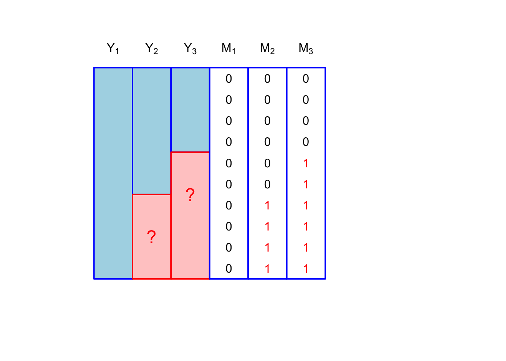
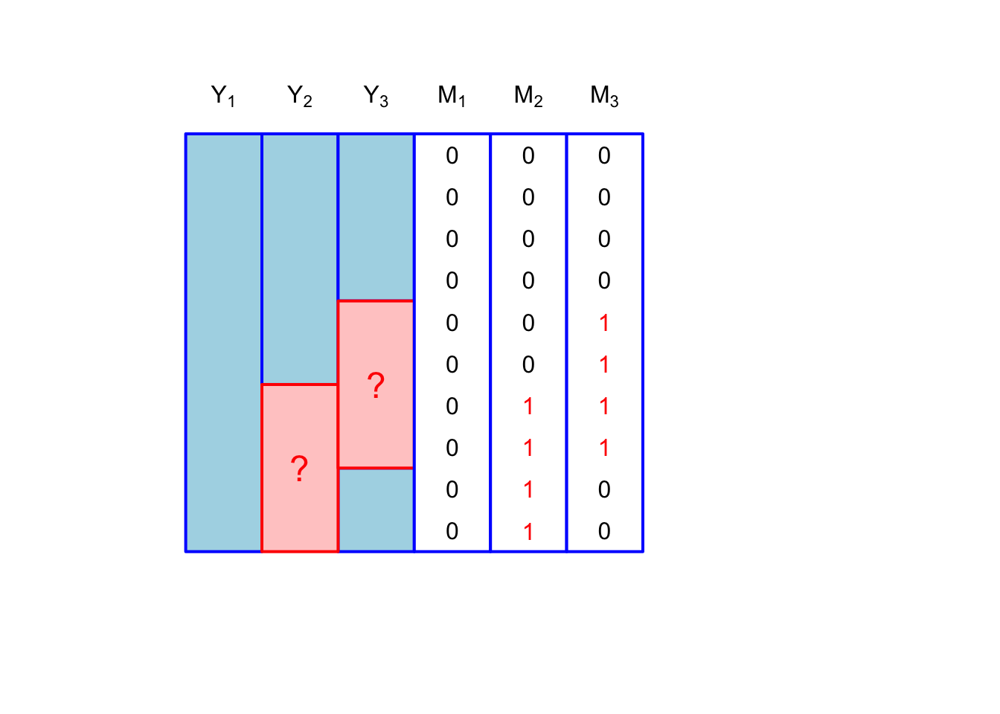

upper_bound_CDAI <-
7 * 20 * 2 +
1 * 30 +
7 * 3 * 5 +
7 * 4 * 7 +
6 * 20 +
5 * 10 +
(42 - 3) * 6 +
50Missing data lecture 1
Introduction
At first glance the title of our textbook, Statistical Analysis with Missing Data, seems redundant. What is statistics but the study of drawing conclusions from limited data? One of the most basic applications of statistics is about how to make inferences about a population quantity from a simple random sample of that population. The measurements from those who were not sampled are, by definition, missing. Because we have a simple random sample from our population, however, we can be sure that the sample mean of the measurements from the sampled units will be an unbiased estimator of the population-level mean. What if some of the sampled units refuse to participate in the survey? Suppose the survey asks about income, and some respondents refuse to report income?
Our definition of missing data for this course will condition on the sample drawn; in other words, we will focus on values that haven’t been recorded for the sample of data we observe. Suppose we have a sample of \(n\) units, on which we have \(K\) measurements, collected into a \(n \times K\) matrix \(Y\) with elements \(y_{ij}\).
Paired with this matrix of measurements is another \(n \times K\) matrix \(M\) with elements \(m_{ij}\), called the missingness indicator matrix. This matrix encodes the information about whether the \((i,j)^\mathrm{th}\) element of \(Y\) is missing or not. Let \(m_{ij} = 1\) if \(y_{ij}\) is missing, and \(0\) if \(y_{ij}\) is observed.
Throughout the course we’ll keep in mind that we’re never looking to explicitly fill in the missing values with a single ``best” value. Instead, we’re going to consider the distribution of possible values that could be filled in and look at how our estimates change for each filled-in dataset.
Does missingness matter?
The textbook defines missing data roughly as missing values that would be meaningful for your analysis if it had been observed (Roderick JA Little and Rubin 2019). The word ``meaningful” is doing a lot of work here; we’ll need to define meaningful for ourselves. Conceptually, we need to define why data is missing in the first place. For example, let’s say we’re analyzing the results from a longitudinal trial comparing Infliximab for severe Crohn’s disease, which is an autoinflammatory disease and a category of inflammatory bowel disease (IBD) (note this is not IBS, or irritable bowel syndrome, which is fairly common), to a new treatment. The investigators are interested comparing Crohn’s Disease Activity Index (CDAI) between the two arms, which is a measure of the severity of symptoms in Crohn’s patients. Imagine two scenarios: one in which an enrolled patient subsequently drops out of the study after several infusions of the new treatment, and one in which an enrolled patient dies prior to the end of the study. In the first scenario, it makes sense to consider that patient’s measure of CDAI to be missing, whereas in the second scenario, it doesn’t make much sense to think about imputing a CDAI for someone who has died.
Let’s say we’re in the first scenario, and we’re confronted with some proportion of patients that have dropped out of the study. Dropout is common in longitudinal studies; in one dataset we’ll encounter later investigating the efficacy of a treatment for schizophrenia, about 37% of patients dropped out by the end of the study (Van Der Elst et al. 2024). The default way to deal with missing data in R is to use na.omit. This is also known as complete case analysis (CC analysis). How much would just using the complete cases impact our inferences?
Being statisticians, we’ll focus on the bias and variance of our estimates. Let’s make things more concrete. Suppose in our Crohn’s trial the outcome \(Y_{i}\) is the change from baseline CDAI to CDAI at the final visit. Assume that all participants have an initial CDAI, so \(M_i\) is \(1\) if the individual dropped out prior the final visit. As for bias, one can show (read: you’ll show on HW 1) that the following relationship holds: \[ \Exp{Y \mid \ind{M = 0}} - \Exp{Y} = \frac{\text{Cov}(Y, \ind{M=0})}{\Exp{\ind{M=0}}} \] We can bound the magnitude of this expression by using Cauchy-Schwarz:
\[ \abs{\Exp{Y \mid \ind{M = 0}} - \Exp{Y}} \leq \frac{\text{SD}(Y) \text{SD}(\ind{M=0})}{\Exp{\ind{M=0}}} \] which simplifies to \[ \abs{\Exp{Y \mid \ind{M = 0}} - \Exp{Y}} \leq \sqrt{\frac{\Exp{\ind{M=1}}}{\Exp{\ind{M=0}}}}\text{SD}(Y) \] This makes sense; for a given proportion of missing values, the larger the variance of \(Y\) the larger the potential bias will be by excluding some of them.
This standard deviation is of course not estimable because we don’t have the missing values of \(Y\), but for variables with bounded support \(Y \in [a, b]\), we can get a further upper bound on the standard deviation using Popoviciu’s inequality: \[ \text{Var}(Y) \leq \frac{(b - a)^2}{4} \] In the next code cell, I’ve written an expression for the upper bound of CDAI.
The upper bound is approximately 1100 (see (Best 2006) for more details, the only value that may not have a hard upper bound is the number of stools per day, which I’ve set to \(20\) above, but may be higher)
This is useful in our hypothetical example because the CDAI scale runs from \([0,1100]\)
\[ \abs{\Exp{Y \mid \ind{M = 0}} - \Exp{Y}} \leq \sqrt{\frac{\Exp{\ind{M=1}}}{\Exp{\ind{M=0}}}} \times 550 \]

While these are worst-case bounds, this shows that even small proportions of missing values can impact inferences if the missingness is correlated with the outcome value.
There is also the variance to consider. Even if the covariance between the missing values is zero, we will lose efficiency by dropping observations that have missing values. In the case where our estimator is a sample mean, and there are \(n\) units with \(m\) missing values, the variance of the CC estimator will be larger by \(1 + \frac{m}{n - m}\).
Thus, in many cases, even if there are only small proportions of missing values, it can make sense to use partial information from incomplete cases to improve our estimators.
Patterns and mechanisms
Much of what we’ll study in our course relates to missingness patterns and missingness mechanisms. The former concerns the marginal distribution of \(M\), while the latter concerns the conditional distribution of \(M \mid Y\).
Missingness patterns
Consider three variables, \(Y_1, Y_2, Y_3\) that we’ve measured on a sample of \(n\) participants. Each variable has an associated binary vector: \(M_1, M_2, M_3\). Missingness patterns refer to the observed sample space for the vectors \([m_{i1}, m_{i2}, m_{i3}]\). The simplest missingness pattern is where only one of the variables is subject to missingness: \[ [m_{i1}, m_{i2}, m_{i3}] \in \{[0,0,0], [0,0,1]\}. \] This is shown in Figure 1.

We could also have multivariate missingness with only two missingness patterns \[ [m_{i1}, m_{i2}, m_{i3}] \in \{[0,0,0], [0,1,1]\} \] which is shown in Figure 2:

We could have something called monotone missingness, where we can order the missingness matrix such that if \(M_{i2} = 1\) then so is \(M_{i3} = 1\): \[ [m_{i1}, m_{i2}, m_{i3}] \in \{[0,0,0], [0,1,1], [0,0,1]\} \]

The least restricted missingness pattern is called a general pattern. This would be a case where there is no special structure. Of course, for \(p\) variables each subject to missingness, the general missingness has a sample space of size \(2^p\)
If we consider that only \(Y_2, Y_3\) are subject to missingness, then we have the following, depicted in :
\[ [m_{i1}, m_{i2}, m_{i3}] \in \{[0,0,0], [0,1,0], [0,0,1], [0,1,1]\} \]

Not surprisingly, the general missingness pattern is the most realistic. You might imagine these patterns occurring during a survey. The pattern \([0,1,1]\) represents unit nonresponse (where a person who is contacted declines to participate in the survey), while \([0,1,0], [0,0,1]\) would be item nonresponse.
The reason that categorizing patterns of missingness is useful is because it can suggest different methods for dealing with missing data. It’s also something that is observable; missing values are not observable, but the patterns are. Thus, in the survey unit and item nonresponse, we might consider different strategies for dealing with unit nonresponse and item nonresponse.
Missingness mechanisms
The most important paper in missing data was published by Don Rubin in 1976 Donald B. Rubin (1976). Somewhat surprisingly to me, this paper was rejected by many stats journals. Rod Little says that he was assigned to review the paper as a graduate student when it was submitted to Biometrika, and he was convinced the paper was wrong after writing a long review. Luckily Little was overridden by his advisor, David Cox, who thought the paper was right, and decided to accept the paper.
The paper was important because it formalized methods of modeling missingness indicators, or the \(M\) matrix from above. Prior to this paper, the \(M\) matrix was not considered an outcome that could be modeled. Rubin’s paper instead categorized \(M\) as a random variable, and determined how the conditional distribution \(M \mid Y\) impacted inferences using only the observed values of \(Y\).
The various ways in which \(M\) can depend on \(Y\) is really an investigation of why a value is missing. Is a survey respondent unwilling to report their income because is high? Did the patient drop out of the study because of side-effects of a drug, or because the drug exacerbated their condition? Did a database error lead to the random dropping of records?
The crux of missing data analysis hinges in what we’re willing to believe about why data are missing. These beliefs aren’t typically testable, unless we have designed our study to have missingness1.
Again, let \(M\) be the matrix with \((i,j)^\text{th}\) entry \(m_{ij}\). Further, let \(m_i\) be the \(i^\text{th}\) row of \(M\). Let \(Y\), \(y_{ij}\) and \(y_i\) be similarly defined. We assume for simplicity (and for much of the book) that \((m_i, y_i)\) are independent between rows.
To put a finer point on it, there are generally three categories of missingness mechanisms. They each relate to the distribution: \[ f_{M \mid Y}(m_i \mid y_i, \phi), \] where \(\phi\) are the parameters that govern the missingness mechanism.
It will be useful in the next subsections to define the following partitions of \(y_i\): Let \[y_{(0)i} = (y_{ij} : m_{ij} = 0)\] be the vector of components of \(y_i\) that are observed for unit \(i\) and let \[y_{(1)i} = (y_{ij} : m_{ij} = 1)\] denote the vector of \(y_i\) components that are missing for \(y_i\).
We can see that \(y_{(0)i}, y_{(1)i}\) depend on \(m_i\).
Missing completely at random (MCAR)
The simplest mechanism is called missing-completely-at-random (MCAR). This is where the missingness is unrelated to the outcome. Data are said to MCAR if the following holds for all \(i\), \(y_i\), \(y^\star_i\), and \(\phi\): \[ f_{M\mid Y}(m_i \mid y_i, \phi) = f_{M\mid Y}(m_i \mid y^*_i, \phi). \] An imporant clarification is that this NOT a conditional independence assumption. It is an assumption about the evaluation of the conditional mass function \(f_{M \mid Y}(m_i \mid y_i, \phi)\) at a specific \(m_i\) (Mealli and Rubin 2015). This point is often misunderstood (including by me).
Conditional independence, \(M \indy Y\) would be characterized as missing-always-completely-at-random (MACAR): Data are said to MACAR if the following holds for all \(i\), \(m_i\), \(y_i\), \(y^\star_i\), and \(\phi\): \[ f_{M\mid Y}(m_i \mid y_i, \phi) = f_{M\mid Y}(m_i \mid y^*_i, \phi). \] The next mechanism is less restrictive than MCAR.
Missing at random (MAR)
Missing at random data are characterized by the following equality for all \(i\), \(y_{(1)i}\), \(y^*_{(1)i}\), and \(\phi\): \[ f_{M\mid Y}(m_i \mid y_{(0)i}, y_{(1)i} \phi) = f_{M\mid Y}(m_i \mid y_{(0)i}, y^*_{(1)i} \phi) \] Again, as with MCAR, this is a statement about the evaluation of the function \(f_{M\mid Y}(m_i \mid y_i, \phi)\). We can define a missing-at-random variant, missing-always-at-random (MAAR) that is equivalent to \(M \indy Y_{(1)i} \mid Y_{(0)i}\)2.
The following example is adapted from Mealli and Rubin (2015): Suppose we’re analyzing data from that Crohn’s disease trial and \(y_i\) has two components: \(y_{i1}\) is CDAI at visit 1 and \(y_{i2}\) is CDAI at visit 2. For patient \(i\) suppose that \(m_i = (1, 0)\). Consider two scenarios:
\(y_{i2}\) is missing because \(y_{i1} > \phi\)
\(y_{i2}\) is missing because \(y_{i2} > \phi\)
In scenario 1 the data are MAR because the mass function is a function of \(y_{i1}\) only, while in scenario 2 the data do not satisfy the definition of MAR.
Let’s make this example more general. The following is from Roderick JA Little and Rubin (2019, 23). Again consider the bivariate case with \(y_{i1}, y_{i2}\). There are 4 possible missing data patterns: \[ (m_{i1}, m_{i2}) \in \{(0,0), (0,1), (1,0), (1,1)\} \] We’ll need to define \(f_{M \mid Y}(m_{i1} = r, m_{i2} = s \mid y_{i1}, y_{i2}, \phi)\). To simplify the notation, let \[ g_{rs}(y_{i1}, y_{i2}, \phi) = f_{M \mid Y}(m_{i1} = r, m_{i2} = s \mid y_{i1}, y_{i2}, \phi) \] The MAR assumption implies the following: \[ \begin{aligned} g_{11}(y_{i1}, y_{i2}, \phi) & = g_{11}(\phi) \\ g_{01}(y_{i1}, y_{i2}, \phi) & = g_{01}(y_{i1}, \phi) \\ g_{10}(y_{i1}, y_{i2}, \phi) & = g_{10}(y_{i2}, \phi) \\ g_{00}(y_{i1}, y_{i2}, \phi) & = 1 - g_{10}(y_{i2}, \phi) - g_{01}(y_{i1}, \phi) - g_{11}(\phi) \end{aligned} \] Thus the probability that \(y_{ij}\) is missing can depend only on \(y_{i(-j)}\), which is a bit odd.
Roderick JA Little and Rubin (2019) proposes the following modification:
\[ \begin{aligned} g_{11}(y_{i1}, y_{i2}, \phi) & = g_{1+}(y_{i1}, \phi)g_{+1}(y_{i2}, \phi) \\ g_{01}(y_{i1}, y_{i2}, \phi) & = (1 - g_{1+}(y_{i1}, \phi))g_{+1}(y_{i2}, \phi) \\ g_{10}(y_{i1}, y_{i2}, \phi) & = g_{1+}(y_{i1}, \phi)(1 - g_{+1}(y_{i2}, \phi)) \\ g_{00}(y_{i1}, y_{i2}, \phi) & = (1 - g_{1+}(y_{i1}, \phi))(1 - g_{+1}(y_{i2}, \phi)) \end{aligned} \] While this is maybe more realistic, though it does make an assumption that \(m_{i1}\) and \(m_{i2}\) are conditionally independent given \(y_{i1}, y_{i2}\), it is also hard to estimate, because we won’t observe missing values of \(y_{i1}\) and \(y_{i2}\).
This is a scenario called missing-not-at-random, or MNAR. This is defined in the next subsection.
Missing-not-at-random (MNAR)
MNAR data is characterized by the following relationship:
\[ f_{M\mid Y}(m_i \mid y_{(0)i}, y_{(1)i} \phi) \neq f_{M\mid Y}(m_i \mid y_{(0)i}, y^*_{(1)i} \phi) \] for some \(\phi\) and \(y_{(0)i} \neq y^*_{(0)i}\) (Mealli and Rubin 2015).
The version using conditional dependence is called missing not always at random, or MNAAR, which is
\[ f_{M\mid Y}(m_i \mid y_{(0)i}, y_{(1)i} \phi) \neq f_{M\mid Y}(m_i \mid y_{(0)i}, y^*_{(1)i} \phi) \]
for some \(\phi, m_i, y_{(1)i}\) and \(y_{(0)i} \neq y^*_{(0)i}\)
Our textbook mentions that sometimes MAR can yield better results than MNAR, citing Donald B. Rubin, Stern, and Vehovar (1995). This is something we’ll explore later on in the course, namely how we would determine whether it was worth it to fit an MNAR model vs. a MAR model. Not surpisingly, like most things in statistics, the answer is ``It depends.”
References
Best, William R. 2006. “Predicting the Crohnʼs Disease Activity Index from the Harvey-Bradshaw Index:” Inflammatory Bowel Diseases 12 (4): 304–10.
Little, Roderick J. 2021. “Missing Data Assumptions.” Annual Review of Statistics and Its Application 8 (1): 89–107. https://doi.org/10.1146/annurev-statistics-040720-031104.
Little, Roderick JA, and Donald B Rubin. 2019. Statistical Analysis with Missing Data. John Wiley & Sons.
Mealli, Fabrizia, and Donald B. Rubin. 2015. “Clarifying Missing at Random and Related Definitions, and Implications When Coupled with Exchangeability: Table 1.” Biometrika 102 (4): 995–1000. https://doi.org/10.1093/biomet/asv035.
Rubin, Donald B. 1976. “Inference and Missing Data.” Biometrika 63 (3): 581–92. https://doi.org/10.2307/2335739.
Rubin, Donald B, Hal S Stern, and Vasja Vehovar. 1995. “Handling ‘Don’t Know’ Survey Responses: The Case of the Slovenian Plebiscite.” Journal of the American Statistical Association 90 (431): 822–28.
Van Der Elst, Wim, Florian Stijven, Fenny Ong, Dries De Witte, Paul Meyvisch, Alvaro Poveda, Ariel Alonso, Hannah Ensor, Christoper Weir, and Geert Molenberghs. 2024. Surrogate: Evaluation of Surrogate Endpoints in Clinical Trials. https://CRAN.R-project.org/package=Surrogate.
Footnotes
One way that can happen is in a univariate missingness setting where \(Y_3\) respresents a hard-to-measure quantity (say number of REM cycles per night) and \(Y_1, Y_2\) are proxies for this quantity. If we randomly select a subset of our participants in which to measure \(Y_3\) then we know that missingness \(M\) is not related to \(Y\) (assuming that none of our selected participants refuse to participate!).↩︎
Missing always at random (MAAR)
Missing always at random data are characterized by the following equality for all \(i\), \(m_i\) \(y_{(1)i}\), \(y^*_{(1)i}\):
\[ f_{M\mid Y}(m_i \mid y_{(0)i}, y_{(1)i} \phi) = f_{M\mid Y}(m_i \mid y_{(0)i}, y^*_{(1)i} \phi) \] This is a more restrictive assumption than MAR alone, though one could see why MAAR might be invoked for asymptotic arguments (Roderick J. Little 2021).↩︎